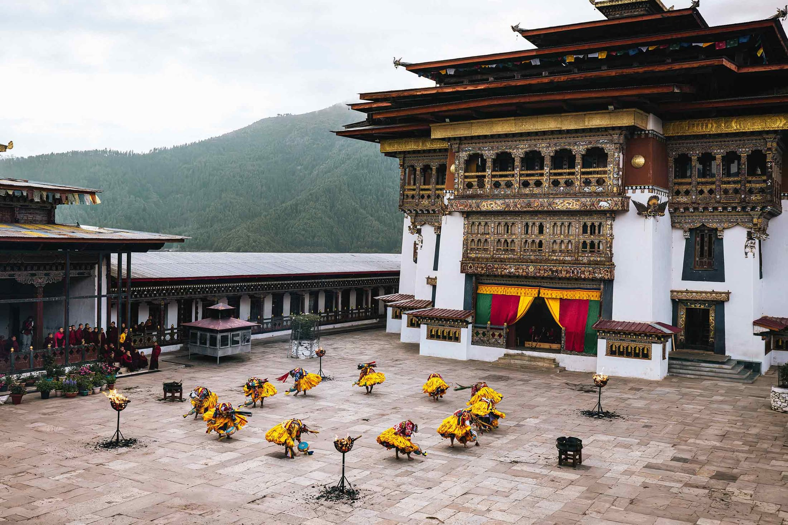
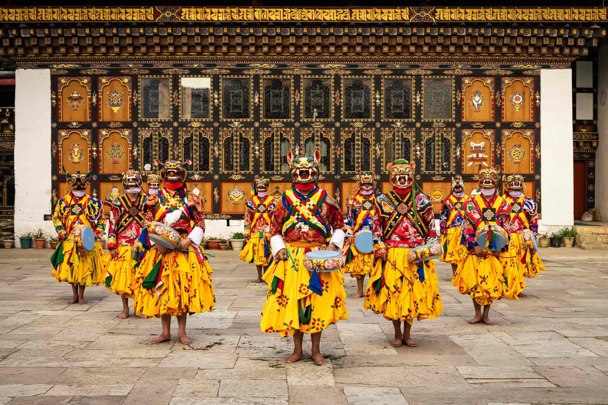
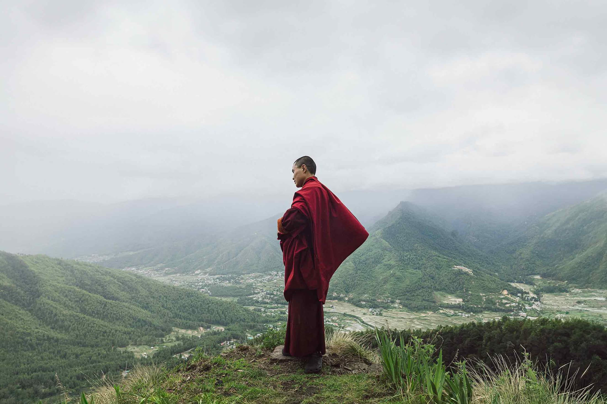

EventFolk Heritage

Step into a living piece of Bhutan's history
Centuries-old walls, hand-carved timber and quiet ritual spaces still hold the rhythms of everyday life in old Bhutan.
Welcome
The Ultimate Journey Through Bhutan's Rich History
Welcome to the Folk Heritage Museum, nestled in Kawajangsa, the vibrant heart of Thimphu, Bhutan's capital. Just a short stroll from the National Library of Bhutan and the National Institute for Zorig Choesum (13 Traditional Arts), the Folk Heritage Museum immerses visitors in the rich tapestry of Bhutanese folk heritage and rural history. With its captivating exhibits bringing medieval Bhutan to life, a visit to this museum is essential to completing your journey through Bhutan.
Our Story →
Room by Room
Inside the Manor
Five stops, each preserved as it was lived in. Select a room below to step inside.

Entrance
Showcasing the timeless skills of Bhutan's rural artisans, step into a realm where tradition and craftsmanship are revered — past a hearth of daily incense, a water-propelled stone mill, a water-driven prayer wheel, and the enigmatic Fortress of the Subterranean Beings.
What's On
Specials & Announcements
Specials

AnnouncementOur Collection
Treasures
Textile
Cham Dance Costume
 Woodwork
Woodwork
Carved Rabsel Window
Ritual Object
Hilltop Chorten Model

Ritual ObjectMonastic Robe

The Building
A house built to be lived in for centuries.
Rammed earth, hand-hewn timber, and joinery raised without nails — restored, not reinvented.
Visit
Hours & Location
Kawajangsa sits a short walk from central Thimphu — close enough for an afternoon visit, quiet enough to feel like somewhere else entirely.
Address
Kawajangsa, Thimphu, Bhutan
Hours
Tue–Sun, 11:00–21:00
Closed Mondays
Reservations
Recommended for dinner service
Get In Touch
Send the museum a message
A quick note reaches our team directly — we typically reply within a day.